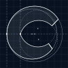

Variant 01
Upper sweep
One construction. A change in curvature, opening and balance.
White on dark
36px mark box · 20px wordmark cap height
Navy on light
36px mark box · 20px wordmark cap height
Construction
Two curves. One continuous silhouette.
Each origin is a curved ribbon drawn from circular arcs. The outside edges share a tangent at the back of the C. The offset inner arcs meet at one shallow cusp, giving the counter its shape. Their shared boundary is removed from the final outline.

Dots: shared outer tangent and inner meeting point. Grid: 10 units.
One rule, varied.
The terminal cuts follow the normal of their corresponding inner circle. The upper and lower radii set the balance; moving the inner centres sets the counter tension.
| Upper / lower outer radius | 41 / 37 |
|---|---|
| Upper / lower inner radius | 28 / 27 |
| Inner-centre offset | +8 / −8 |
| Opening angles | 32° / 36° |
| Shared spine | x = 10 to 30; y = 50 |
The mark uses only SVG arcs and straight closing cuts. No font outlines are used to construct it.
Two origins forming one C — a reference to Cobie + Evan becoming Covan.
Files and 512px proofs


- White: merged mark SVG · identity SVG · origin 1 SVG · origin 2 SVG
- Navy: merged mark SVG · identity SVG · origin 1 SVG · origin 2 SVG
- Construction grid SVG